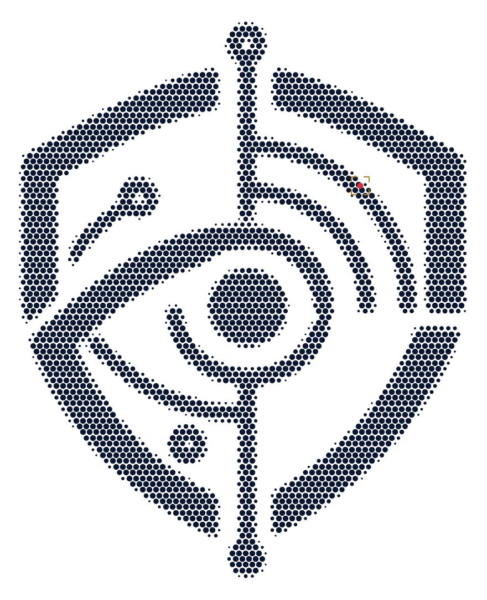

Cybersecurity services · Damascus, Syriaخدمات الأمن السيبراني · دمشق، سورياServices de cybersécurité · Damas, SyrieCybersicherheit · Damaskus, Syrien
We see it first.نراه أولاً.Nous le voyons en premier.Wir sehen es zuerst.
RASAD helps businesses and institutions in Syria protect their systems, their information and their operations: from finding weak spots to investigating incidents and planning for the unexpected.تساعد رصد الشركات والمؤسسات في سوريا على حماية أنظمتها ومعلوماتها وأعمالها: من كشف نقاط الضعف إلى التحقيق في الحوادث والاستعداد لما هو غير متوقع.RASAD aide les entreprises et les institutions en Syrie à protéger leurs systèmes, leurs informations et leurs activités : de la détection des points faibles à l’investigation des incidents, jusqu’à la préparation à l’imprévu.RASAD hilft Unternehmen und Institutionen in Syrien, ihre Systeme, ihre Informationen und ihren Betrieb zu schützen: vom Aufspüren von Schwachstellen über die Untersuchung von Vorfällen bis zur Vorbereitung auf das Unerwartete.
Cybersecurityالأمن السيبرانيCybersécuritéCybersicherheitInformation securityأمن المعلوماتSécurité de l’informationInformationssicherheitRisk assessmentتقييم المخاطرÉvaluation des risquesRisikobewertungDigital forensicsالتحقيقات الرقميةInvestigation numériqueDigitale ForensikSecurity consultingالاستشارات الأمنيةConseil en sécuritéSicherheitsberatungAML/CFTمكافحة غسل الأموالLBC/FTAML/CFT
01Why it mattersلماذا يهمّ ذلكPourquoi c’est importantWarum es wichtig ist
The risks are real.المخاطر حقيقية.Les risques sont réels.Die Risiken sind real.
$4.99M1 dot = $100,000كل نقطة = 100,000 دولار1 point = 100 000 $1 Punkt = 100.000 $
average cost of a data breachمتوسط تكلفة اختراق البياناتcoût moyen d’une violation de donnéesdurchschnittliche Kosten einer Datenpanne
IBM Cost of a Data Breach 2026
2471 dot = 1 dayكل نقطة = يوم واحد1 point = 1 jour1 Punkt = 1 Tag
days on average to identify (183) and contain (64) a breachيوماً في المتوسط لاكتشاف الاختراق (183) واحتوائه (64)jours en moyenne pour détecter (183) et contenir (64) une violationTage dauert es im Schnitt, eine Datenpanne zu erkennen (183) und einzudämmen (64)
IBM Cost of a Data Breach 2026
48%1 dot = 1%كل نقطة = 1%1 point = 1 %1 Punkt = 1 %
of breaches now involve a third partyمن الاختراقات يشارك فيها طرف ثالثdes violations impliquent désormais un tiersder Datenpannen erfolgen inzwischen unter Beteiligung Dritter
Verizon DBIR 2026
31%1 dot = 1%كل نقطة = 1%1 point = 1 %1 Punkt = 1 %
of breaches start with an exploited vulnerabilityمن الاختراقات تبدأ باستغلال ثغرةdes violations commencent par l’exploitation d’une vulnérabilitéder Datenpannen beginnen mit einer ausgenutzten Schwachstelle
Five services. One partner.خمس خدمات. شريك واحد.Cinq services. Un seul partenaire.Fünf Leistungen. Ein Partner.
Each service stands on its own, and together they build on each other.كل خدمة قائمة بذاتها، ومعاً تبني على بعضها.Chaque service se suffit à lui-même, et ensemble ils se renforcent.Jede Leistung steht für sich, und gemeinsam bauen sie aufeinander auf.
Protecting your networks, systems, applications and data. We test your defences within an authorized scope, fix the weak spots and help you detect and respond to incidents.حماية الشبكات والأنظمة والتطبيقات والبيانات. نختبر دفاعاتك ضمن نطاق مصرّح به، ونعالج نقاط الضعف، ونساعدك على اكتشاف الحوادث والاستجابة لها.Protéger vos réseaux, systèmes, applications et données. Nous testons vos défenses dans un périmètre autorisé, corrigeons les points faibles et vous aidons à détecter les incidents et à y répondre.Schutz Ihrer Netzwerke, Systeme, Anwendungen und Daten. Wir testen Ihre Abwehr in einem freigegebenen Rahmen, beheben Schwachstellen und helfen Ihnen, Vorfälle zu erkennen und darauf zu reagieren.
02
Information Securityأمن المعلوماتSécurité de l’informationInformationssicherheit
Protecting the information itself. We classify it by sensitivity, organize who can access what, and write the policies that keep it confidential, correct and available.حماية المعلومات نفسها. نصنّفها حسب الحساسية، وننظّم صلاحيات الوصول، ونعدّ السياسات التي تحافظ على سرّيتها وسلامتها وإتاحتها.Protéger l’information elle-même. Nous la classons selon sa sensibilité, organisons qui peut accéder à quoi et rédigeons les politiques qui en préservent la confidentialité, l’intégrité et la disponibilité.Schutz der Informationen selbst. Wir stufen sie nach Schutzbedarf ein, regeln, wer worauf zugreifen darf, und schreiben die Richtlinien, die sie vertraulich, korrekt und verfügbar halten.
03
Risk Assessmentتقييم المخاطرÉvaluation des risquesRisikobewertung
Showing you where to act first. We map your assets and threats, score each risk by likelihood and impact, review your suppliers and deliver a prioritized plan, plus a general assessment of the environment you operate in.نوضّح لك من أين تبدأ. نحصر أصولك والتهديدات، ونقيّم كل خطر حسب احتماله وأثره، ونراجع مورّديك، ونسلّمك خطة مرتّبة حسب الأولوية، مع تقييم عام لبيئة عملك.Vous montrer par où commencer. Nous recensons vos actifs et les menaces, évaluons chaque risque selon sa probabilité et son impact, examinons vos fournisseurs et livrons un plan priorisé, ainsi qu’une évaluation générale de l’environnement dans lequel vous opérez.Wir zeigen Ihnen, wo Sie zuerst ansetzen. Wir erfassen Ihre Werte und Bedrohungen, bewerten jedes Risiko nach Wahrscheinlichkeit und Auswirkung, prüfen Ihre Lieferanten und liefern einen priorisierten Plan – dazu eine allgemeine Einschätzung des Umfelds, in dem Sie tätig sind.
04
Digital Forensicsالتحقيقات الرقميةInvestigation numériqueDigitale Forensik
Answering what really happened. Within a clear authorization, we collect and preserve evidence, rebuild the timeline and document findings you can act on.نجيب عمّا حدث فعلاً. ضمن تفويض واضح، نجمع الأدلة ونحفظها، ونعيد بناء التسلسل الزمني، ونوثّق نتائج يمكنك البناء عليها.Établir ce qui s’est réellement passé. Dans le cadre d’une autorisation claire, nous collectons et préservons les preuves, reconstituons la chronologie et documentons des constats sur lesquels vous pouvez agir.Wir klären, was wirklich passiert ist. Im Rahmen eines klaren Auftrags sichern wir Beweise, rekonstruieren den zeitlichen Ablauf und dokumentieren Ergebnisse, auf deren Grundlage Sie handeln können.
05
Security Consultingالاستشارات الأمنيةConseil en sécuritéSicherheitsberatung
Helping you plan and decide. We prepare security and crisis plans, gather information lawfully from public or authorized sources, and report on partners and suppliers.نساعدك على التخطيط واتخاذ القرار. نعدّ خطط الأمن والأزمات، ونجمع المعلومات بشكل قانوني من مصادر علنية أو مصرّح بها، ونعدّ تقارير عن الشركاء والموردين.Vous aider à planifier et à décider. Nous préparons des plans de sécurité et de crise, recueillons légalement des informations auprès de sources publiques ou autorisées, et établissons des rapports sur vos partenaires et fournisseurs.Wir helfen Ihnen beim Planen und Entscheiden. Wir entwickeln Sicherheits- und Krisenpläne, beschaffen Informationen rechtmäßig aus öffentlichen oder autorisierten Quellen und erstellen Berichte zu Partnern und Lieferanten.
Not sure where to start?لا تعرف من أين تبدأ؟Vous ne savez pas par où commencer ?Sie wissen nicht, wo Sie anfangen sollen?
Tell us what you need to protect, and we'll suggest the right first step.أخبرنا بما تريد حمايته، وسنقترح عليك الخطوة الأولى المناسبة.Dites-nous ce que vous devez protéger, et nous vous proposerons la bonne première étape.Sagen Sie uns, was Sie schützen müssen, und wir schlagen Ihnen den richtigen ersten Schritt vor.
Syria's banks are reconnecting with the world, and every new partner asks one question: is this money clean? We help banks, investors and regulators answer it.المصارف السورية تعود إلى الاتصال بالعالم، وكل شريك جديد يطرح سؤالاً واحداً: هل هذا المال نظيف؟ نساعد المصارف والمستثمرين والجهات الرقابية على الإجابة عنه.Les banques syriennes renouent avec le monde, et chaque nouveau partenaire pose la même question : cet argent est-il propre ? Nous aidons les banques, les investisseurs et les régulateurs à y répondre.Syriens Banken finden wieder Anschluss an die Welt, und jeder neue Partner stellt dieselbe Frage: Ist dieses Geld sauber? Wir helfen Banken, Investoren und Aufsichtsbehörden, sie zu beantworten.

Syria reconnecting with regional and international partners (illustration).سوريا تعود إلى التواصل مع شركائها الإقليميين والدوليين (رسم توضيحي).La Syrie renoue avec ses partenaires régionaux et internationaux (illustration).Syrien knüpft wieder Verbindungen zu regionalen und internationalen Partnern (Illustration).
Grey listالقائمة الرماديةListe griseGraue Liste
Syria is under FATF increased monitoring, and launched a national AML/CFT strategy in July 2026.سوريا تحت المتابعة المعززة لمجموعة العمل المالي، وأطلقت استراتيجية وطنية لمكافحة غسل الأموال وتمويل الإرهاب في تموز 2026.La Syrie est sous surveillance renforcée du GAFI et a lancé en juillet 2026 une stratégie nationale de LBC/FT.Syrien steht unter verstärkter Beobachtung der FATF und hat im Juli 2026 eine nationale AML/CFT-Strategie gestartet.
FATF, June 2026 · SANA, July 2026
7.6%
average fall in capital inflows after grey-listing, as a share of GDPمتوسط تراجع تدفقات رأس المال بعد الإدراج في القائمة الرمادية، من الناتج المحليbaisse moyenne des entrées de capitaux après l’inscription sur la liste grise, en part du PIBdurchschnittlicher Rückgang der Kapitalzuflüsse nach Aufnahme in die graue Liste, gemessen am BIP
IMF Working Paper WP/21/153
Six controls. One program.ستة ضوابط. برنامج واحد.Six contrôles. Un seul programme.Sechs Kontrollen. Ein Programm.
01KYC
Know your customerاعرف عميلكConnaissance du clientKundenidentifizierung
Verify identity, the source of funds and the purpose of the account.التحقق من الهوية ومصدر الأموال والغرض من الحساب.Vérifier l’identité, l’origine des fonds et l’objet du compte.Identität, Herkunft der Mittel und Zweck des Kontos prüfen.
02KYB · UBO
Know the business and its ownerاعرف الشركة ومالكهاConnaître l’entreprise et son propriétaireUnternehmen und Eigentümer kennen
Check registration and licences, the ownership structure and the ultimate beneficial owner.التحقق من السجل التجاري والتراخيص وهيكل الملكية والمستفيد الحقيقي.Vérifier l’immatriculation et les licences, la structure de propriété et le bénéficiaire effectif.Handelsregister und Lizenzen, Eigentümerstruktur und den wirtschaftlich Berechtigten prüfen.
03
Sanctions screeningفحص قوائم العقوباتFiltrage des sanctionsSanktionslisten-Screening
Screen every name against UN Security Council, OFAC, EU and UK lists, and re-check at every update.فحص كل اسم مقابل قوائم مجلس الأمن وقوائم OFAC والاتحاد الأوروبي والمملكة المتحدة، وإعادة الفحص مع كل تحديث.Contrôler chaque nom au regard des listes du Conseil de sécurité de l’ONU, de l’OFAC, de l’UE et du Royaume-Uni, et recontrôler à chaque mise à jour.Jeden Namen mit den Listen des UN-Sicherheitsrats, der OFAC, der EU und des Vereinigten Königreichs abgleichen und bei jeder Aktualisierung erneut prüfen.
04PEP
Politically exposed personsالأشخاص المعرّضون سياسياًPersonnes politiquement exposéesPolitisch exponierte Personen
Senior public roles, their family and close associates: higher risk, more checks.أصحاب المناصب العامة الرفيعة وأقاربهم والمقرّبون منهم: مخاطر أعلى، تدقيق أكبر.Hautes fonctions publiques, leur famille et leurs proches : risque plus élevé, contrôles renforcés.Inhaber hoher öffentlicher Ämter, ihre Familien und nahestehende Personen: höheres Risiko, genauere Prüfung.
05EDD
Enhanced due diligenceالعناية الواجبة المعززةVigilance renforcéeVerstärkte Sorgfaltspflichten
Where risk is higher: source of wealth, senior management approval and closer ongoing review.حيث ترتفع المخاطر: مصدر الثروة، وموافقة الإدارة العليا، ومراجعة مستمرة أدق.Là où le risque est plus élevé : origine du patrimoine, approbation de la direction et suivi continu plus étroit.Wo das Risiko höher ist: Herkunft des Vermögens, Zustimmung der Geschäftsleitung und engere laufende Überwachung.
06
Transaction monitoringمراقبة المعاملاتSurveillance des transactionsTransaktionsüberwachung
Flag unusual patterns and report suspicious transactions to the financial intelligence unit.رصد الأنماط غير الاعتيادية والإبلاغ عن المعاملات المشبوهة إلى وحدة المعلومات المالية.Repérer les schémas inhabituels et déclarer les opérations suspectes à la cellule de renseignement financier.Auffällige Muster erkennen und verdächtige Transaktionen an die zentrale Meldestelle (FIU) melden.
Three tracks. One partner.ثلاثة مسارات. شريك واحد.Trois axes. Un seul partenaire.Drei Bereiche. Ein Partner.
Track 01المسار الأولAxe 01Bereich 01
Banks and financial institutionsالبنوك والمؤسسات الماليةBanques et institutions financièresBanken und Finanzinstitute
Customer screeningفحص العملاءFiltrage des clientsKundenprüfung
Risk assessmentتقييم المخاطرÉvaluation des risquesRisikobewertung
Reviews of AML systemsمراجعة أنظمة مكافحة غسل الأموالRevue des dispositifs LBCPrüfung von AML-Systemen
Developing compliance proceduresتطوير إجراءات الامتثالÉlaboration des procédures de conformitéEntwicklung von Compliance-Verfahren
Track 02المسار الثانيAxe 02Bereich 02
Investors and companiesالمستثمرون والشركاتInvestisseurs et entreprisesInvestoren und Unternehmen
Partner and supplier checksالتحقق من الشركاء والموردينVérification des partenaires et fournisseursPrüfung von Partnern und Lieferanten
Sanctions screeningفحص العقوباتFiltrage des sanctionsSanktionslisten-Screening
Identifying beneficial ownersالكشف عن المستفيدين الحقيقيينIdentification des bénéficiaires effectifsErmittlung wirtschaftlich Berechtigter
Risk assessment of business dealsتقييم مخاطر التعاملات التجاريةÉvaluation des risques des opérations commercialesRisikobewertung von Geschäften
Track 03المسار الثالثAxe 03Bereich 03
Government and regulatorsالجهات الحكومية والرقابيةPouvoirs publics et régulateursBehörden und Aufsicht
Training and technical adviceالتدريب والاستشارات الفنيةFormation et conseil techniqueSchulung und fachliche Beratung
Developing risk-assessment mechanismsتطوير آليات تقييم المخاطرÉlaboration de mécanismes d’évaluation des risquesEntwicklung von Verfahren zur Risikobewertung
Building institutional capacityدعم بناء القدرات المؤسسيةRenforcement des capacités institutionnellesAufbau institutioneller Kapazitäten
Within the required mandates and licencesوفق الصلاحيات والتراخيص اللازمةDans le respect des mandats et licences requisIm Rahmen der erforderlichen Mandate und Lizenzen
Is your bank ready? Let's talk.هل مصرفك جاهز؟ لنتحدث.Votre banque est-elle prête ? Parlons-en.Ist Ihre Bank bereit? Sprechen wir darüber.
Clear scope. Clear results.نطاق واضح. نتائج واضحة.Un périmètre clair. Des résultats clairs.Klarer Rahmen. Klare Ergebnisse.
1
UnderstandنفهمComprendreVerstehen
We start with what matters most to you: your critical systems, information and services.نبدأ بما يهمّك أكثر: أنظمتك ومعلوماتك وخدماتك الحيوية.Nous partons de ce qui compte le plus pour vous : vos systèmes, informations et services critiques.Wir beginnen mit dem, was Ihnen am wichtigsten ist: Ihren kritischen Systemen, Informationen und Diensten.
2
Agree the scopeنتفق على النطاقConvenir du périmètreRahmen vereinbaren
Every test and investigation is planned, authorized in writing and controlled.كل اختبار وتحقيق مخطّط له ومصرّح به كتابياً وتحت السيطرة.Chaque test et chaque investigation est planifié, autorisé par écrit et maîtrisé.Jeder Test und jede Untersuchung wird geplant, schriftlich freigegeben und kontrolliert.
3
AssessنقيّمÉvaluerBewerten
We find the weak spots and risks, with your data kept confidential at every stage.نكشف نقاط الضعف والمخاطر، مع الحفاظ على سرّية بياناتك في كل مرحلة.Nous identifions les points faibles et les risques, en préservant la confidentialité de vos données à chaque étape.Wir finden Schwachstellen und Risiken – Ihre Daten bleiben dabei in jeder Phase vertraulich.
4
ActنعملAgirHandeln
You get a clear report and a prioritized plan: what to fix today, and what can wait.تحصل على تقرير واضح وخطة مرتّبة حسب الأولوية: ما يجب إصلاحه اليوم، وما يمكنه الانتظار.Vous recevez un rapport clair et un plan priorisé : ce qu’il faut corriger aujourd’hui, et ce qui peut attendre.Sie erhalten einen klaren Bericht und einen priorisierten Plan: was heute behoben werden muss und was warten kann.
05The video seriesسلسلة الفيديوهاتLa série vidéoDie Videoreihe
Go deeper, one service at a time.تعمّق أكثر، خدمة تلو الأخرى.Allez plus loin, un service à la fois.Tiefer einsteigen, Leistung für Leistung.
Six short videos. Start with the overview.ستة فيديوهات قصيرة. ابدأ بالنظرة العامة.Six courtes vidéos, en anglais avec sous-titres arabes. Commencez par la présentation.Sechs kurze Videos auf Englisch mit arabischen Untertiteln. Beginnen Sie mit dem Überblick.

06About RASADعن رصدÀ propos de RASADÜber RASAD
Our name means to watch.اسمنا يعني المراقبة.Notre nom signifie observer.Unser Name bedeutet beobachten.
RASAD (رصد) is a cybersecurity services company based in Damascus. As organizations in Syria rebuild and reconnect, more of their work runs on systems, data and connections. We help them protect all three: calmly, within clear agreements, and with advice they can act on.رصد شركة خدمات أمن سيبراني مقرّها دمشق. ومع إعادة البناء والتحوّل الرقمي، أصبح جزء أكبر من عمل المؤسسات في سوريا يعتمد على الأنظمة والبيانات والاتصالات. نساعدها على حمايتها جميعاً: بهدوء، وضمن اتفاقات واضحة، وبتوصيات قابلة للتنفيذ.RASAD (رصد) est une société de services en cybersécurité basée à Damas. À mesure que les organisations syriennes se reconstruisent et renouent avec le monde, une part croissante de leur activité repose sur des systèmes, des données et des connexions. Nous les aidons à protéger tout cela : sereinement, dans le cadre d’accords clairs et avec des recommandations applicables.RASAD (رصد) ist ein Dienstleister für Cybersicherheit mit Sitz in Damaskus. Während Organisationen in Syrien sich neu aufbauen und wieder vernetzen, hängt immer mehr ihrer Arbeit an Systemen, Daten und Verbindungen. Wir helfen ihnen, all das zu schützen: besonnen, auf Grundlage klarer Vereinbarungen und mit umsetzbaren Empfehlungen.
رَصَد: to watch, to observe. From the same root comes مَرصَد (marsad), an observatory.رَصَد: راقَبَ وترقَّب. ومن الجذر نفسه جاءت كلمة مَرصَد.رَصَد : observer, veiller. De la même racine vient مَرصَد (marsad), l’observatoire.رَصَد: beobachten, wachen. Aus derselben Wurzel stammt مَرصَد (marsad), das Observatorium.
07Contactتواصل معناContactKontakt
Book your Briefing.احجز إحاطة رصد.Réservez votre Briefing RASAD.Vereinbaren Sie Ihr RASAD-Briefing.
The RASAD Briefing is a free, confidential 30-minute consultation on cybersecurity or AML/CFT compliance. Write to us with the subject “BRIEFING”, your sector and what you want to focus on.إحاطة رصد جلسة استشارية مجانية وسرّية مدتها 30 دقيقة، في الأمن السيبراني أو في الامتثال لمكافحة غسل الأموال وتمويل الإرهاب. راسلنا بعنوان «BRIEFING»، واذكر قطاعك والمحور الذي تريد التركيز عليه.Le Briefing RASAD est un entretien-conseil gratuit et confidentiel de 30 minutes, consacré à la cybersécurité ou à la conformité LBC/FT. Écrivez-nous avec l’objet « BRIEFING », en précisant votre secteur et le sujet qui vous intéresse.Das RASAD-Briefing ist ein kostenloses, vertrauliches Beratungsgespräch von 30 Minuten zu Cybersicherheit oder AML/CFT-Compliance. Schreiben Sie uns mit dem Betreff „BRIEFING“ und nennen Sie Ihre Branche und Ihr Thema.
One question: who sees it first, you or them?سؤال واحد: من يراه أولاً، أنت أم هم؟Une seule question : qui le voit en premier, vous ou eux ?Eine Frage: Wer sieht es zuerst – Sie oder die Angreifer?